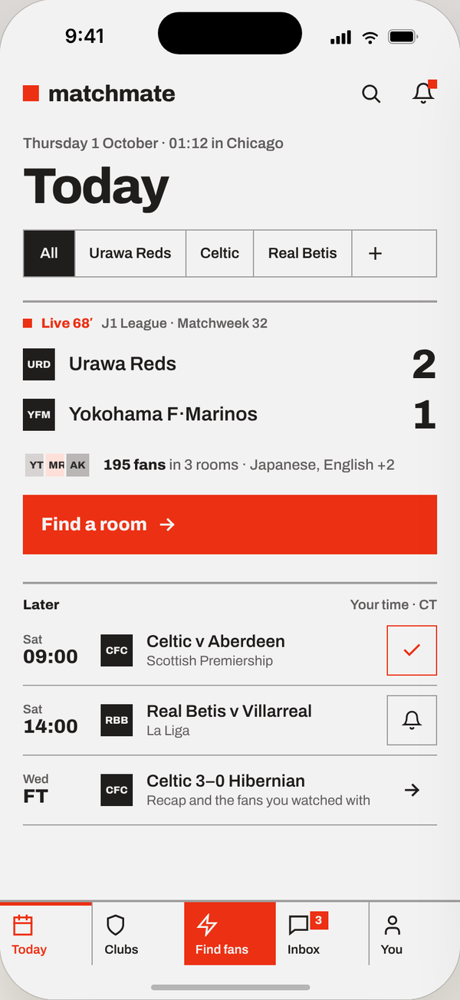
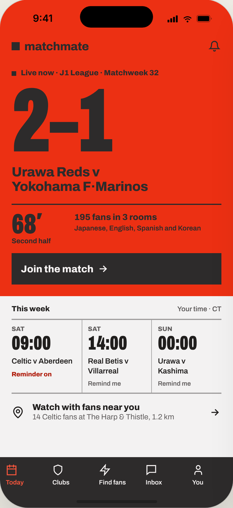
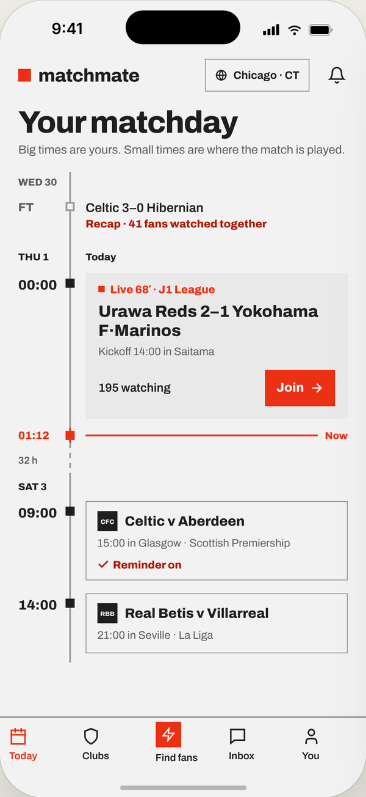
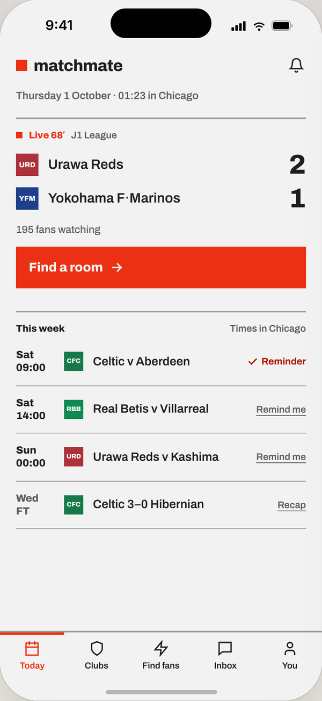
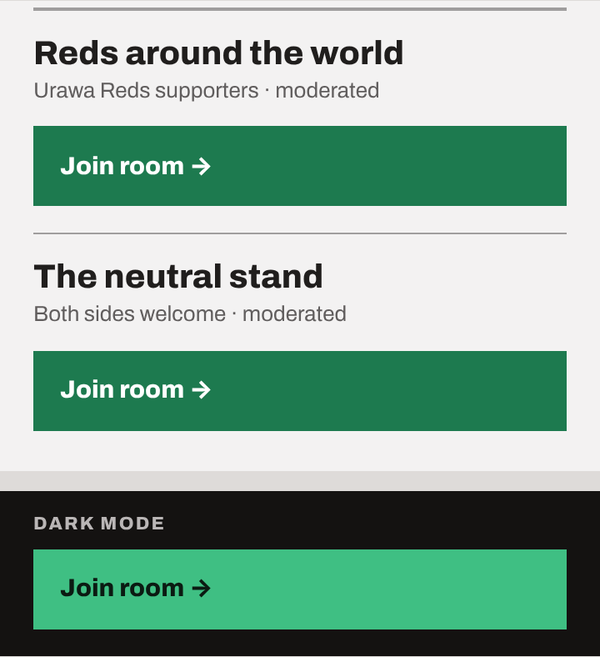
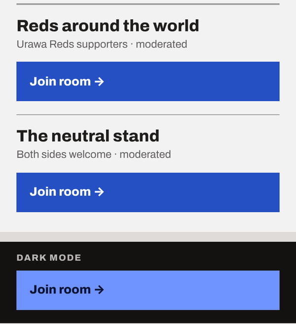
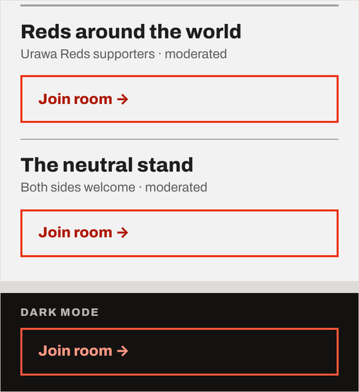
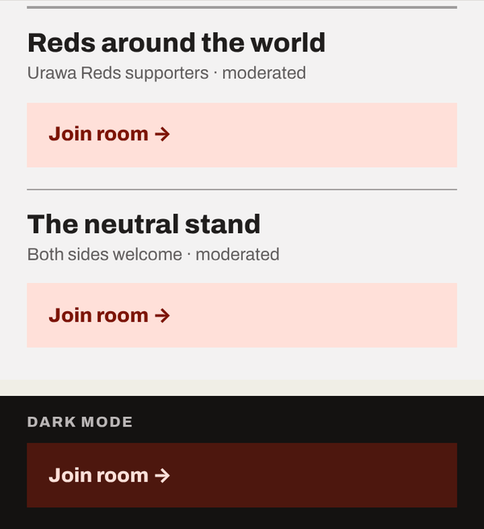

01 · PRODUCT DESIGN
MatchMate
Find your fans. Share the match. A social matchday prototype for football fans watching far from home.

Watching a match is easier than finding your people
Fans who follow a club with a small local following can struggle to find people to watch with. Different languages, time zones, and leagues make that connection harder for international students, expats, and supporters living abroad.
MatchMate began as my Spring 2026 UX-course concept, where user interviews identified isolation among fans watching less mainstream leagues abroad. In Fall 2026 I redesigned the app’s information architecture and flows from scratch around shared live viewing. I did the research, design, and prototyping on my own.
From kickoff to a continuing connection
- Find your matchToday prioritizes followed clubs, live scores, local kickoff times, and reminders.
- Choose your roomCompare languages, watchers, and chat speed before joining, or let Match me pick.
- Join the conversationRead translated messages, reveal the original text, and react to the room or individual goals.
- Stay connected after full timeExplore the recap and follow the people you watched with.
Decisions, side by side
I made each major decision by building several options on the same screens and comparing them directly. Three of those rounds shaped the app most.
1. Three visual directions for the same three screens
I built Today, the match and room screen, and the live room in three directions, all with the same demo match and data. Only the Today screens are shown here.



2. A calmer Today screen
The first Today screen asked too much of a new user: a large title, a club filter, a fan count, a boxed reminder bell, and a solid red tab all competed for attention. I compared three simpler layouts. I chose 2a, which keeps the same structure with every extra layer removed: one date line, one live block, and one list for the week, with red marking only the main action and live state.

3. Join room: moving the accent from red to cobalt
A solid red Join button reads as a warning, which is the opposite of an invitation. I tested four alternatives on the room list, each in light and dark mode. I chose cobalt blue: it is neutral, clashes with no club’s colors, and stays clear of the green associated with betting apps. The accent then moved to cobalt across the app.




Checking every flow against Nielsen’s heuristics
I reviewed every flow in the prototype against Nielsen’s ten usability heuristics, rating each finding on the 0–4 severity scale with a proposed fix. The core loop held up: a new user could find the live match, join a room, react, read translated messages, and reach a recap without dead ends. The largest gaps were in the live room’s edge cases and in actions that couldn’t be undone. There were no catastrophic issues and three major ones; six further priority fixes were rated minor.
| Finding | Heuristic | Change |
|---|---|---|
| Fans on a delayed stream would see goals before their screen showed them. | Error prevention | Joining a room asks whether your stream runs behind; if it does, scores and goals stay hidden until you choose to see them. |
| Sent messages had no status, and a dropped connection simply froze the chat. | Visibility; error recovery | Messages show Sending and Not sent with Retry; a reconnecting banner keeps the draft. |
| Leaving a room took one tap and couldn’t be undone; Block sat next to Message and Follow. | User control | Leaving, blocking, unfollowing, and deleting can be undone; Block asks first and explains what happens. |
All three are rated severity 3 (major) on Nielsen’s scale. The full review, including the minor findings, is on the process site.
What I’m testing next
Not yet tested with fans. The decisions above come from comparing options and from an expert review, not from watching people use the prototype. The next step is a moderated usability test with football fans who watch away from their home community.
The test uses five tasks drawn from the review:
- Find tonight’s live match and join a room that reads in your language.
- Your stream is 30 seconds behind. Set up the room so it won’t spoil goals.
- Someone is being rude. Stop seeing their messages and report them.
- After full time, send a message to one person you watched with.
- Change your timezone, then check when Celtic play next.
I will record task success, time on task, and wrong turns, and check whether participants can explain a translated message and find its original. This section will report what they did, including what didn’t work.
Explore the prototype and process
The prototype covers ten flows around one simulated live match, with a guided tour, light and dark themes, and chat in English, Japanese, Spanish, and Korean. It uses demo data and placeholder club marks. It is a prototype demonstration; it does not establish a launched service or measured user outcomes.
See every option and the full heuristic review ↗ (opens in a new tab)